tl;dr!: Computer vision models transfer poorly across geographies, and suffer significant drop in accuracy when trained on dominant geographies like US/UK and tested on under-represented geographies like Asia/Africa. We introduce a new large-scale dataset, called GeoNet, to study this problem of geographical robustness, covering vision tasks like place recognition and object classification. We formulate types of shifts typical to the problem of geographical transfer such as context, design and prior shifts, and highlight the limitation of many current unsupervised adaptation methods to bridge these domain gaps. We also show that several large-scale pretraining methods and large vision models do not suffice in providing geographical robustness when fine-tuned on geographically biased datasets.
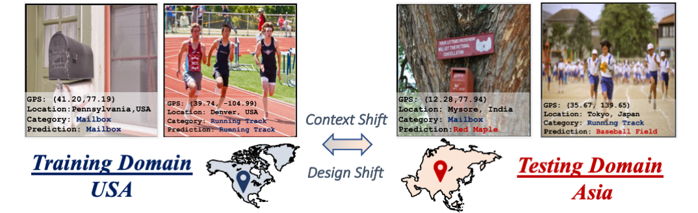
While modern computer vision models yield human-level accuracies when trained and tested on the images from the same geographical domain, the accuracy drops significantly when presented with images from different geographies. Here, images belonging to mailbox and running track are misclassified due to design and context shifts between the domains induced by disparate geographies.
Geographic Disparity Between Domains
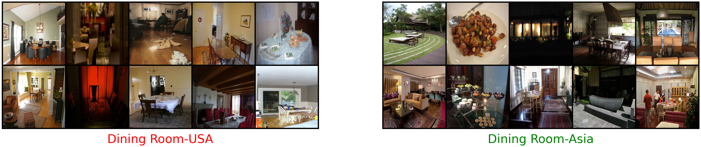
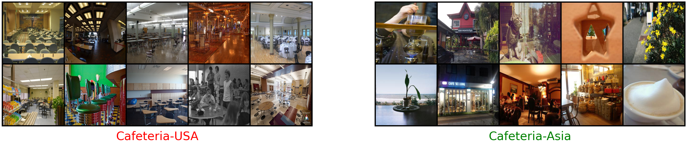
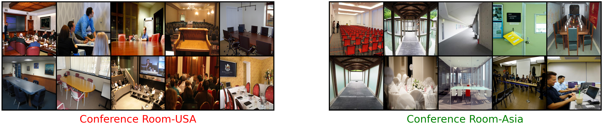
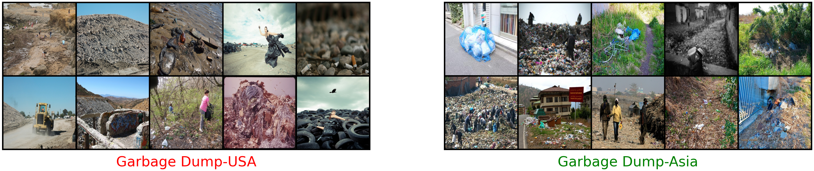
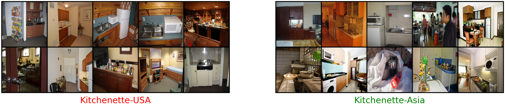
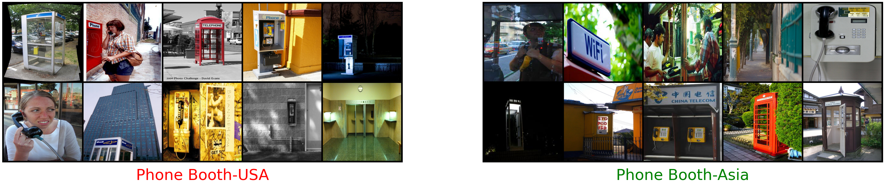
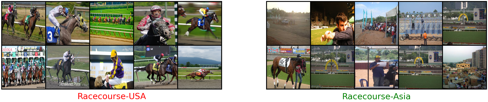
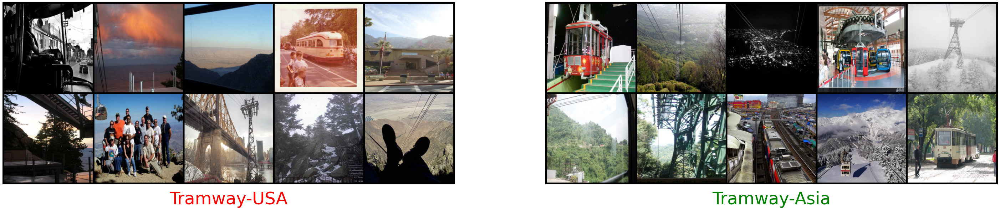
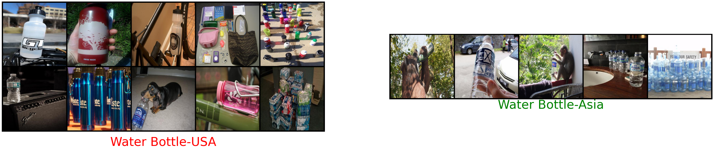
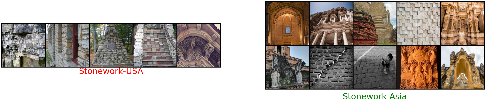
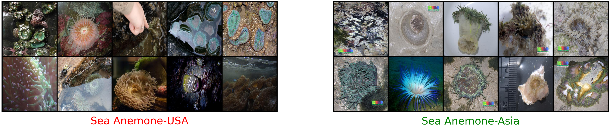
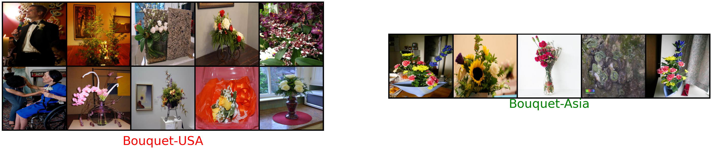
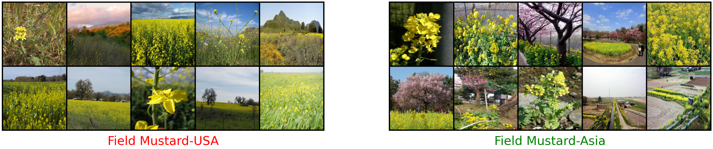
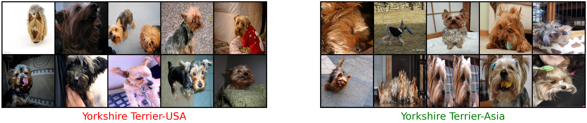
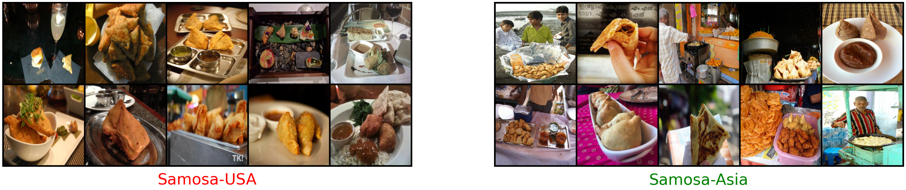
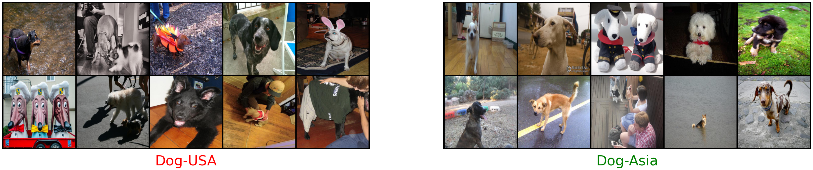
Overview of GeoNet dataset
If you want to skip the description and directly access the dataset, you can download it here.
What is GeoNet? To facilitate robustness studies across geographies and to help design geographically transferable models, we introduce a new large-scale dataset curated from existing datasets by selecting images which belong to USA and Asia and separating them into two different domains. GeoNet contains benchmarks for two tasks:
GeoPlaces for place recognition with images curated from Places-205 and YFCC-100M.
GeoImnet for image classification with images collected from WebVision Dataset.
Additionally, GeoNet also contains benchmark for universal domain adaptation called GeoUniDA to evaluate adaptation and transfer with private source and target classes. A complete concept and data curation pipeline is presented in our paper.
How is GeoNet different from other datasets? While several datasets already exist to study domain adaptation such as Office-31, OfficeHome and DomainNet, they are generally restricted to few narrow notions of domain shifts in style and appearance, while GeoNet is the first large-scale dataset proposed to study shifts caused by change in geographies. Another key distinguishing factor of GeoNet is that it is the largest available dataset for domain adaptation in terms of number of categories and images, summarized in the table below.
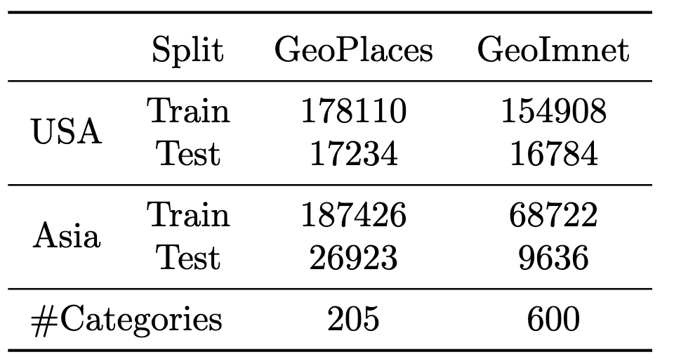
Summary of GeoNet: Number of images in train and test splits in each of our benchmarks.
Since all our images are sourced from Flickr, we also provide additional metadata associated with image such as latitude and longitude coordinates, hashtags and captions to facilitate design of adaptation algorithms that leverage multimodal supervision. We also have a slighly larger, albiet more noisy, split for GeoImnet with 700 classes. If working with noisy classes and images is your thing, you can access that version here.
How is the problem of geographic adaptation different? The fundamental idea of unsupervised domain adaptation, which is to enable model transfer across domains with different data distributions and different available supervision holds for geographical adaptation as well. However, the classic covariate shift assumption which assumes uniform domain discrepency across all the images does not hold anymore for geographic adaptation due to the diverse source of variations. Under some reasonable assumptions, we formulate the joint image-label distribution P(x,y) as follows.
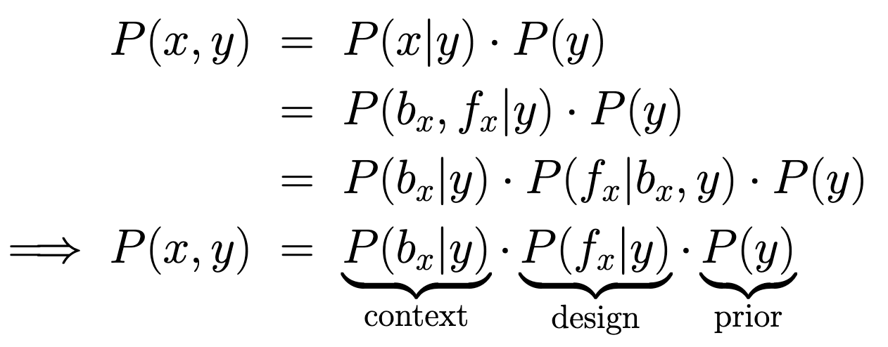
Therefore, the shifts between domains can arise from differences in any of the context (background in an image), design (make or design of the foreground) or the prior (label distribution of images) differences across domains. In our paper, we show some examples on how these shifts manifest in our dataset.
How significant are these cross-domain performance drops? We illustrate the severity of domain differences across geographies and the resulting accuracy drops below by training a ResNet-50 model on training images from one domain and testing on both within-domain and cross-domain test sets. On both GeoPlaces and GeoImnet benchmarks, we observe significant cross-domain accuracy differences, a large portion of which can be attributable to ge-disparity between the test sets.
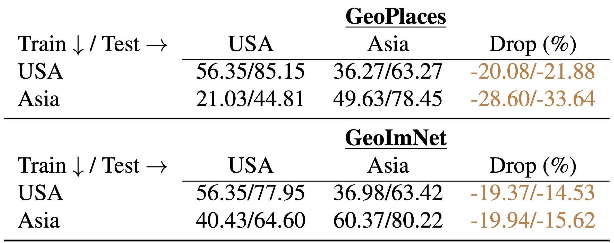
Top-1/Top-5 accuracies of Resnet-50 models across geographically different train and test domains. Note the significant drop in accuracies caused by the geographical domain shifts in each setting.
Benchmarking SOTA methods on GeoNet
Do current adaptation methods help to address these drops? Since most previous SOTA UDA methods work with the aforementioned uniform covariate shift between domains, they really don't help to bridge the novel notions of shifts presented by geographic disparities. While we have't verified all UDA methods (which is beyond the capability of a single graduate student), we did benchmark GeoNet on many classical as well as standard adaptation methods. First, we define relative accuracy gain of an adaptation method as the improvement in accuracy obtained by a the method over a source-only model as a percentage of gap between a source-only model and the target-supervised upper bound (which is 100% if the method achieves the target supervised upper bound). Then, we show below that many popular UDA methods that give positive gains on other datasets like DomainNet actually give worse accuracies then a source-only model on GeoNet dataset!
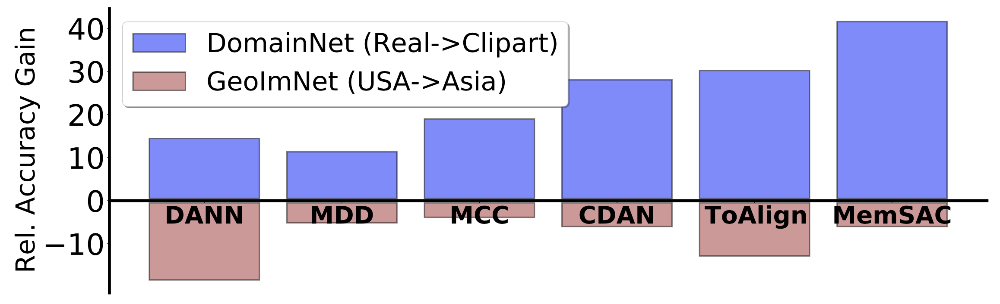
Many SOTA UDA methods give worse accuracies than a source-only baseline on GeoNet resulting in negative relative gains.
More detailed top-1/top-5 accuracies for each method on all our benchmarks are presented in our paper.
Do recent advances in pre-training and architectures help? They do, and they don't. From figure below, it is evident that using larger models and larger scale pre-training strategies definitely help in improving the absolute accuracy values, indicating that using larger vision transformers pre-trained on large-scale datasets are generally better than regular ImageNet-pretrained CNNs. However, after fine-tuning on geographically biased datasets, the gap with the target supervised accuracies using these same architecture and various pre-training strategies is still significant, indicating much room for further growth.
Many large-scale architectures and pre-training strategies fail to showcase geographical robustness after fine-tuning on geographically biased datasets.
Geographic Distribution of images in GeoNet
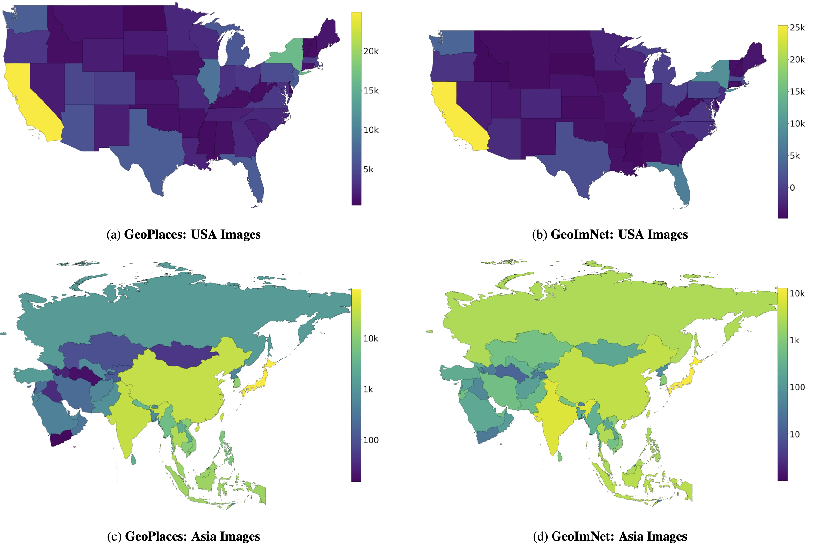
We show the images per geographical sub-region in both domains on GeoNet. As shown, in Asia, a majority of images are from Japan, India, Korea, China and Taiwan while in USA, a majority of images are from populous regions like California and New York. Note that the color-bar scale is linear for USA and log-scale for Asia.
BibTeX
@article{kalluri2023gnet
author = {Kalluri, Tarun and Xu, Wangdong and Chandraker, Manmohan},
title = {GeoNet: Benchmarking Unsupervised Adaptation across Geographies},
journal = {CVPR},
year = {2023},
},